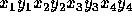
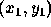
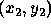
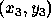
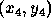

| Intersecting Lines |
We all know that a pair of distinct points on a plane defines a line and that a pair of lines on a plane will intersect in one of three ways: 1) no intersection because they are parallel, 2) intersect in a line because they are on top of one another (i.e. they are the same line), 3) intersect in a point. In this problem you will use your algebraic knowledge to create a program that determines how and where two lines intersect.
Your program will repeatedly read in four points that define two lines in the x-y plane and determine how and where the lines intersect. All numbers required by this problem will be reasonable, say between -1000 and 1000.
The first line contains an integer N between 1 and 10 describing how many pairs of lines are represented. The next N lines will each contain eight integers. These integers represent the coordinates of four points on the plane in the order  . Thus each of these input lines represents two lines on the plane: the line through  and  and the line through  and  . The point is always distinct from . Likewise with and .
There should be N+2 lines of output. The first line of output should read INTERSECTING LINES OUTPUT. There will then be one line of output for each pair of planar lines represented by a line of input, describing how the lines intersect: none, line, or point. If the intersection is a point then your program should output the x and y coordinates of the point, correct to two decimal places. The final line of output should read ``END OF OUTPUT".
5 0 0 4 4 0 4 4 0 5 0 7 6 1 0 2 3 5 0 7 6 3 -6 4 -3 2 0 2 27 1 5 18 5 0 3 4 0 1 2 2 5
INTERSECTING LINES OUTPUT POINT 2.00 2.00 NONE LINE POINT 2.00 5.00 POINT 1.07 2.20 END OF OUTPUT